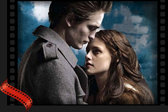

Scurt istoricteleviziune
Ca și radioul, televiziunea este o invenție a perioadei interbelice, deși primele principii au început să se studieze încă din secolul al XIX-lea. Au trecut mai mult de șaizeci de ani de când, pe un ecran sferic, apărea prima imagine a unei prezentatoare.
Cinematograful pe TV World
În 1946 în SUA și Marea Britanie un adult se ducea la cinematograf, în medie, de treizeci de ori pe an. Departe de a fi mulțumită că a luat locul cinematografiei, televiziunea tinde chiar să absoarbă cinematografia ca activitate economică. După ce a distrus, nu cinematografia, ci independența economică a acesteia, televiziunea se hrănește din substanța cinematografiei și o menține în stare de supraviețuire.
 În 1927, Philo, în vârstă de numai 20 de ani, a transmis primele imagini electronice în laboratorul lui din San Francisco. Imaginile au fost o simplă linie neagră care doar a fost rotită ca să se vadă dacă televiziunea poate înregstra și produce mișcarea ei. Prima televiziune nu a avut sunet și imaginea era alb-negru, fără alte culori.
În 1927, Philo, în vârstă de numai 20 de ani, a transmis primele imagini electronice în laboratorul lui din San Francisco. Imaginile au fost o simplă linie neagră care doar a fost rotită ca să se vadă dacă televiziunea poate înregstra și produce mișcarea ei. Prima televiziune nu a avut sunet și imaginea era alb-negru, fără alte culori. Primul televizor s-a vândut în Statele Unite în 1938. Din 1960 s-au introdus: televiziunea color, sunetul stereo, și a apărut televiziunea prin cablu care permite recepționarea mai multor canale de televiziune de la mai multe stații.
Filme Noi
-
Toy Story 3

Povestea Jucăriilor 3 este un film de animație american din 2010 și al treilea din franciza Povestea Jucăriilor. Este produs de studiourile Pixar și distribuit de Walt Disney Pictures.
-
Prince of Percia: Sands of Time

Prințul Persiei: Nisipurile timpului(engleză Prince of Persia: The Sands of Time) este un film fantastic și de aventuri din 2010, cu un scenariu scris de Jordan Mechner, Boaz Yakin, Doug Miro și Carlo Bernard; regizat de Mike Newell și produs de Jerry Bruckheimer.
-
The Twilight Saga: Eclipse
Amurg este o serie de cărți fantastice (despre vampiri) pentru tineri, scrisă de autoarea Stephenie Meyer, serie ce urmărește aventurile adolescentei Isabella „Bella” Swan, a cărei viață se schimbă total din momentul în care se mută în ploiosul și aparent banalul orășel Forks, ca să locuiască cu tatăl ei.